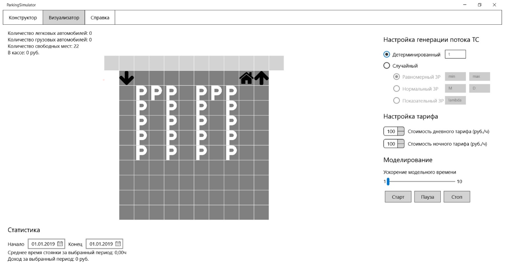
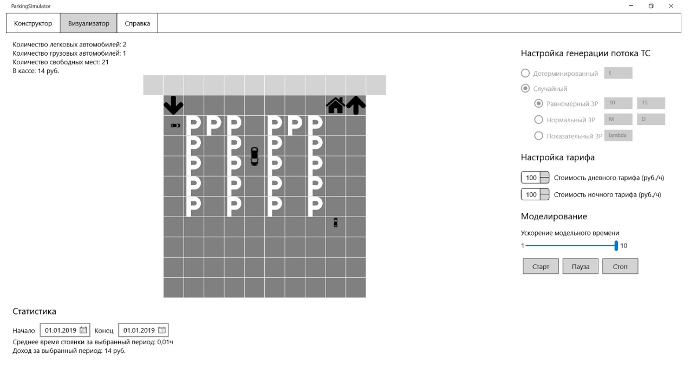

Работа с визуализатором
На экранной форме «визуализатор» демонстрируется работа системы, которая изображает движущиеся автомобильные средства, которые заезжают и выезжаю с парковки. Для совершения демонстрации необходимо выбрать и ввести некоторые параметры.
К этим параметрам относятся: «настройка генерации потока тс», «настройка тарифа», «моделирование», «статистика». Рассмотрим более детально каждый параметр.
«Настройка генерации потока тс» позволяет выбрать один из двух типов генерации потока: детерминированный или случайный. Если пользователь выбирает детерминированный поток, то ему необходимо вручную заполнить поле, где стоит буква «t» – интервал появления транспортных средств. К данному полю есть некое ограничение, поэтому «t» должно быть задано от 10 до 3600 секунд. В случае выбора случайного потока пользователь, пользователь должен выбрать один из трех законов распределения: равномерный (в таком случае следует заполнить поля «min» и «max» - нижнюю и верхнюю границы интервала), нормальный (следует заполнить поля «M» и «D» – математическое ожидание и дисперсию) или показательный (следует заполнить поле «lambda»). В данных полях приведены следующие ограничения: «M» от 10 до 3600 секунд, «D» от 1 до 600, «lambda» от 0,0002 до 0,1.
«Настройка тарифа» позволяет выбрать стоимость дневного и ночного тарифа. Пользователь щелкает на кнопку ▲, чтобы увеличить стоимость и кнопку ▼, чтобы уменьшить стоимость. Минимальная стоимость по дневному тарифу 10, максимальная 400. По ночному тарифу минимальная стоимость 10, максимальная 200.
«Моделирование» позволяет увеличить скорость работы системы. Пользователь перемещает ползунок от 1 до 10, тем самым задавая темп работы парковки.
«Статистика» позволяет выбрать дату начала и конца сбора статистики, в которую входит: среднее время стоянки за выбранный период, доход за выбранный период.
После установки необходимы параметров, требуется нажать кнопку «Старт». Запуститься моделирование работы платной парковки. Кнопка «Пауза» служит для приостановления моделирования. Кнопка «Стоп» служит для остановки моделирования и сброса к начальному времени. В верхней правой части окна будет отображаться модельное время, количество легковых и грузовых автомобилей, количество свободных парковочных мест в настоящий момент и количество денежных средств в кассе.
 Назад